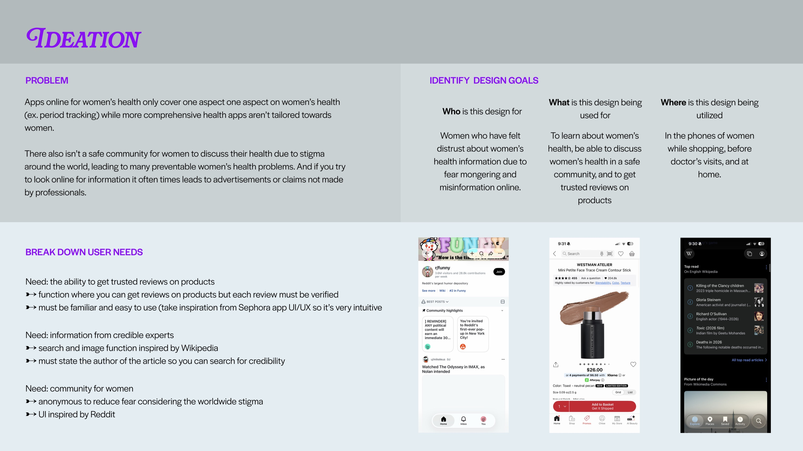
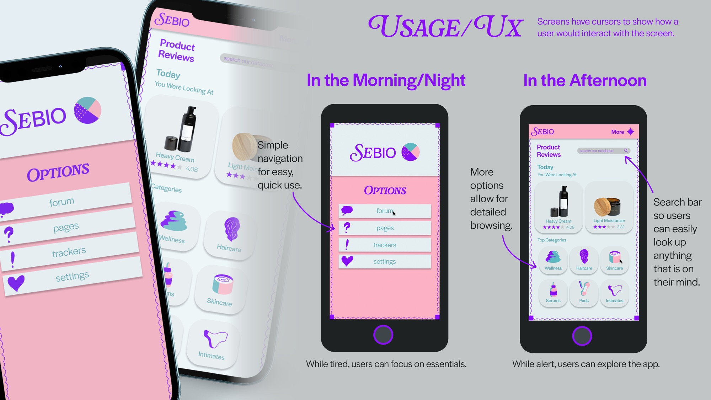

Sebio: Women’s Health App — UI/UX, Branding, Illustration
Software used: Figma, Adobe Illustrator, Adobe Photoshop, Blender, Procreate
Sebio is a name for a series of projects I am working on, all with the goal of bringing more accessibility to health. This women’s health app gives women a community and database of products and information that promote knowledge and assurance rather than fear mongering by only including verified, non-sponsored reviews and information written by women experts.

Figma File Link (Partial Prototype): https://www.figma.com/design/UXyITwhCpGRO9GRhaQFmqc/sebio?node-id=0-1&t=tRTbCRaEXS3D366o-1
Process

Ideation
While reading about the controversy surrounding Flo and them selling user’s data to companies, I read through the comments and realized that a big complaint was that these apps were never fully made for women by women, and that women’s wellness was always full of untrustworthy products. I wanted to stop this, so I prototyped an app that includes forums, information pages, and product reviews with only verified women, experts in women’s health, and non-sponsored women reviewers.

Competitive Analysis
Health websites either look medical or illustration-forward. I wanted to make my app look less sterile but also still serious and trustworthy, so I used dreamy colors, but clean UI and typography. While most apps also only have one feature, this app has a forum, information, and review feature. This allows the app to be more efficient for the user.


User Testing
I asked several women I knew to click through the project and give their thoughts, and they mentioned how illustrations would benefit the app by making it feel more personal versus corporate. Therefore, I created illustrations for all of the icons that were used to replace the images used in the design.
